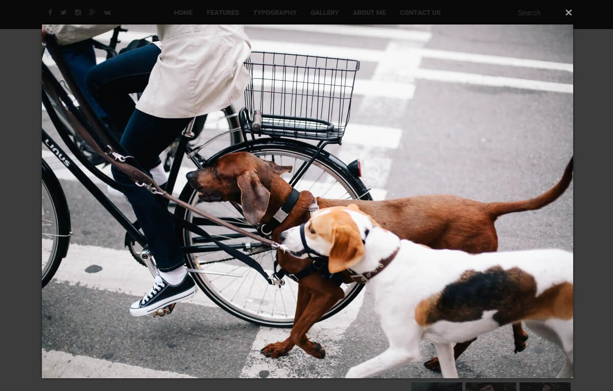

Owl - WordPress theme for blogging, magazine, news, editorial, photography, review or other goals website. This theme has a responsive layout, you can easy to customize it and Create your Awesome Website.
- Responsive Design
- Mobile/Tablet Ready
Drag & Drop Posts and other elements Order
- Theme Options Powered by WordPress Customizer
- Tons of customizable color options
- Easy to Hide & Show All Main Elements
- Contact Form 7 Support
- Demo Content File Included XML
- Beautiful Featured Slider
- 3 Different Blog Layouts
- Masonry Blog Layout
- Full Blog Layout
- Grid Layout
- Masonry Blog Layout + Sidebar
- Full Blog Layout + Sidebar
- Grid Layout + Sidebar
- About Author Area
- Most Discussed Area
- Full Width Instagram feed in footer with Custom Styles
- Post Formats
- Standard Posts
- Quote Posts
- Gallery Posts:
- Slider Fixed Height
- Slider Auto Height
- Grid 3 Columns
- Grid 4 Columns
- Large Image + Grid 3 Columns
- Large Image + Grid 4 Columns
- Video Posts:
- Audio Posts:
- SoundCloud
- Else
- Sticky Posts Support
- Popup Image on Post, Page, Gallery Options
- 9 Custom Widgets + 1 MailChimp for WordPress Widget Design, so you can display a beautiful newsletter widget:
- About Me
- Facebook Like Box + Image Cover with Title
- Featured Video
- Flickr
- Instagram Slider
- Latest Posts
- Recent Tweets
- Social Icons
- Tag Cloud
- MailChimp Sign-Up Form
- Gallery Page/Post Options
- Sticky Navigation
- Full Width/Sidebar Page Template
- Sticky Sidebar Option
- Sidebar Supports
- on Homepage
- on Posts
- on Archives
- Social Media Icons in Header and Footer
- Footer Full Size Logo with Background Option
- Zoom & Border Image Effects Option
- Retina Logo Support (For Full Retina you should use: WP Retina 2x or else)
- Related Post inside post
- Next/Prev Post Navigation
- Child Theme Ready
- Custom CSS Area in Theme Customizer
- Translation Ready (MO/PO Files)
- HTML5, CSS3, JQuery
- Works with WP 4.3+
- WordPress dropdown support
- Online HTML Documentation
Scroll Down and read more about This Great WordPress Theme
WP Theme Installation
WordPress Install
Hey there!If you have not yet installed wordpress download it from the link below by clicking on "Download Wordpress".
Installing WordPress Link - * Instruction is located the same link!
Famous five minute WordPress installation will bring you positive feedback on this CMS
If you have installed, or was installed WP, go to the next step.
Theme Install
This is the first and easiest way to install the theme.- Go to Appearance Themes.
- Click on Add New at the top.
- Click on Upload Theme at the top.
- Upload "owl.zip" archive file via web interface
- Upload "owl-child.zip" archive file via web interface too, if you want customize your theme safely.
- Activate newly main installed theme
Theme Install via FTP
This is the second way to install the theme.- Unzip "owl.zip" on your Desktop. You should get folder called "owl"
- If you want to customize your theme safely unzip "owl-child.zip" on your Desktop too. You should get folder called "owl-child"
- Sign in to your hosting using your favorite FTP client.
- Navigate to /wp-content/themes/ and upload "owl" and "owl-child" folder.
- Open WordPress Dashboard and go to Appearance Themes and activate owl main theme from there.
Theme Required Plugins
Post-installation issues.
After installing the theme you will see window with a message about installing the required plug-ins. Don't ignore it, Begin installing plugins and Activate all of them
Theme Features
Here you will see more detail about what I mentioned in the description list.
Search Bar
- Always on Top - fixed positions, always with the menu, there is no problem when you scroll.
- Sliding Full Width Search on mobile version - easy to use on tablet & mobile devices
Featured Posts Slider Area
- Alternative Slider
- One Slide Slider
- Three Slide Slider (Full Screen)
Footer Logo Area
- Dark & Light Logo - you can easy upload your logo and it's will be looks great.
- Footer BG Images - set different image at footer area.
Automatic changing of font style
and, from, & - this small words has different font style (italic), this occurs automatically, you do not need to worry about it.
- You can replace english words on your native language words when you will create yours file of translate (MO/PO)
Post Info, Likes System, Share Buttons, Dropcap and Sticky Posts
This theme support all main features of posts, you can easy hide/show all of this options.
Facebook Widget Feature
Set your custom text, image url and you will see cover image, all to get your own style and not to spoil the design of the site. Also is you need widget without cover only click on appropriate checkbox.

Popup Windows
All images of posts now showng in Popup Windows (Magnific Popup), great solution to show more for your visitors. Also you can disable Popup Windows on Pages, on Gallery Pages and on Posts in general.
Sidebar & Sticky Sidebar
You can activate sidebar on Home Page, Post Pages and Archives Pages, with any layout you want.
- Sticky Sidebar - it's really great feature. Now you will see your sidebar in any case, scroll your content and sidebar will follow you. You can give users chance see important information longer.
Most Discussed Area
Now you can easy show most discussed area on main or other pages. Activate it in WP Customizer and you will see this beatiful block with your most popular posts.
Instagram in Footer & Sidebar
Do you love Instagram? Share your images in footer area. You can sidebar widgets too - Slider, Thumbnails, Slider with text inside.
Social Icons
Do you love Instagram? Share your images in footer area. You can sidebar widgets too - Slider, Thumbnails, Slider with text inside.
Masonry, Grid & Full Layouts
3 Different Layouts for you website. Also you may activate on layout for main page, and different layout for all archive pages. You can easy do it, only choose optionts via theme WP Customizer and you get this result:
Masonry, Grid & Full Layouts + Sidebar
Activate sidebar if you need and you will see this result:
Post Types
Activate sidebar if you need and you will see this result:
- Standard
- Gallery
- Slider Fixed Height
- Slider Auto Height
- Grid 3 Columns
- Grid 4 Columns
- Large + Grid 3 Columns
- Large + Grid 4 Columns
- Video
- YouTube
- Vimeo
- Else
- Quote
- Audio
- SoundCloud
- Else

Gallery Types
You can set page with any kind of gallery:
- Tiled Gallery
- Squared Gallery
- Circle Gallery
Custom Pages
Now on demo site you can see About Me, Contact Us, Pages without Sidebar and more. All of this pages you can easy create only with theme options and plugins.
Drag & Drop Post Order
Now you can easy drag & Drop all items in admin panel, order your posts and other elements via mouse usage only. Only activate what do you want to order with Drag & Drop function.
Theme Structure
Below you can see the structure of the Main Page. All about how to choose Featured Slider and more you can see in Theme Customizer Category.
Social Icons in Header & Footer
All social links are set from Appearance Customize Social Media Settings
Main Menu
Manage menu is very simple, just using Drag & Drop, you can create submenu from items ( pages/links/categories ).
For more information about creating & managing menu, you can view the following link: WordPress Menu User Guide - By default you will see notice.
Search Area
You can see large search bar on mobile version and simple search on desctop version.
Logo Area
You can set Logo (and Logo for Retina) from:
Appearance Customize Logo and Header Settings
Featured Area
Choose your favorite slider and set options from:
Appearance Customize Featured Area Settings
Content Area
You can choose Masonry, Grid or Full Layout (with or without sidebar) and result you will see in Content Area. And you may set different layouts for home and archive pages.
Sidebar
This Theme Support 9 Widgets and MailChimp Designed Widget (Skin for widget).
Footer Widgets
You can set widgets in footer in three columns, or disable footer widget area in general.
Most Discussed Area
You can activate Most Discussed Area on home and other pages. You will see most popular posts in slider.
Footer Logo & Footer Image
Upload your Logo and choose Background from:
Appearance Customize Footer Settings
Upload Retina Size Logo to be always in the best quality.
Footer Widgets
Add widget to all three columns from
Appearance Widgets
Instagram Footer
Setup Instagram Widget in Footer Intagram Area and choose needed settings:
- Number of images to show: 10
- Template: Thumbnails - Without Border
- Number of Columns: 5
Copyrights
Add you own info from:
Appearance Customize Footer Settings
Main Menu
This theme support a multi-level dropdown menu that can be set from Appearance Menu
- Create your own multilevel menu using this guide WordPress_Menu_User_Guide
- Save your menu.
- Go to Appearance Menus Manage Locations
- Select your created menu from list
- Save changes in Manage Locations
How to Create Post
This theme support all trending post formats.
Now you can use all perfomance of your wordpress, view of type options has changed and has become much easier, clearer and more comfortable.


How to Create Gallery
Theme support Tiled, Cirle and Square Gallery Types.
To create a new gallery post/page:
- Go to Pages Add New
- Enter your page title.
- Enter your page content.
- To create galley inside page/post content:
- Click on Add Media button
- In opened modal window choose Create Gallery
- Upload or Choose Images you want
- Apply seting in right sidebar after you choose images
- Click on Insert Gallety button
- After insert you may delete or edit your gallery
- When you are done, click "Publish" button to save the page.
How to Create Contact Page
- Please install required plugins before: Google Maps Plugin, Contact Form 7, Column ShortcodesAfter you intall plugins you may create Contact Page with Contact Form and Google Map (Colored or Gray).
- Go to Contact Contact Forms
- Add New Form or use Default
- Edit Contact Form if you need (click on name)
- Copy and Past Contact Form Shortcode on your Contact Page
- Go to Google Maps All Maps
- Add New Google Map with your own settings
- Set location and other features and required fields
- Copy and Past Google Map Shortcode on your Contact Page
- Go to your Page and add needed info, you can shoose columns shortcodes for your content.
How to Create About Page
- Please install required plugins before: Column Shortcodes- Create simple page
- Add needed columns with Column Shortcodes
- Add images and info about you
How to Create Page with Sidebar
- Create simple page
- Choose Template: Page with Sidebar
- Publish it :)
Widgets Structure
You can find 9 Custom Widgets + 1 MailChimp Widget Design (Cover for widget), all Custom Widgets called "Owl - ".
All standart widgets work perfect too, so you can use categories and others widgets so easy.
* - For example standard Categories Widget has slide down effect on child categories.
* - Read more below.
Custom Widgets
Go to Appearance Widgets and use the drag and drop interface to insert widgets into the desired widget areas.

Owl - About Me
About Me Widget include this options:
- Title
- Image URL
- About me text
Owl - Flickr
Flickr widget allows you to add recent images uploaded to your flickr account. You can customize to your Flickr ID, number of photos to show and the display order (latest/random) from the widget settings. To find your Flickr ID, use http://idgettr.com
Owl - Instagram Slider
Instagram Widgets use Owl Instagram Widget Plugin.
Add widget in needed area and set this options:
- Title
- Search Instagram for: Username/Hashtag
- Source: Instagram/WP Media Library
- Save and Display Images from Media Library: Yes/No
- Number of images to show
- Check for new images every
- Template
- Slider - Normal
- Slider - Overlay Text
- Thumbnails
- Thumbnails - Without Border
- Image size
- Select Image Size
- Thumbnail
- Medium
- Large
- Order by
- Date - Ascending
- Date - Descending
- Popularity - Ascending
- Popularity - Ascending
- Random
- Link to
- Instagram Image
- Instagram Profile
- Custom Link
- None
- Advanced Options
- Image Link rel attribute
- Image Link class
- Advanced Slider Options
- Slider Navigation Controls
- Arrows & Dots
- Arrows
- Dotted
- No Navigation
- Number of words in caption
- Slider Text Description
- Slider Navigation Controls
Footer Instagram: Owl - Instagram Slider
Add Instagram to Footer Instagram Area and Setup this settings to your widget necessarily:
- Number of images to show: 8
- Template: Thumbnails - Without Border
- Number of Columns: 8

{kind=link}
{kind=link}
{kind=link}
{kind=link}
{kind=link}
{kind=link}
{kind=link}
{kind=link}
{kind=link}
{kind=link}
{kind=link}
{kind=link}
{kind=link}
{kind=link}
{kind=link}
{kind=link}
{kind=link}
{kind=link}
{kind=link}
{kind=link}
{kind=link}
{kind=link}
{kind=link}
{kind=link}
{kind=link}
{kind=link}
{kind=link}
{kind=link}
{kind=link}
{kind=link}
{kind=link}
{kind=link}
{kind=link}
{kind=link}
{kind=link}
{kind=link}
{kind=link}
{kind=link}
{kind=link}
{kind=link}
{kind=link}
{kind=link}
{kind=link}
{kind=link}
{kind=link}
{kind=link}
{kind=link}
{kind=link}
{kind=link}
{kind=link}
{kind=link}
{kind=link}
Theme Customizer
All main settings for this theme can be set from the WP Theme Customizer.
Go to Appearance Customize
- If some settings works only in customizer, or options checked but function not appear, you need uncheck option and check it again.
{kind=link}
General Settings
You can set this options here.
- Upload your favicon
- Choose Homepage Layout
- Choose Homepage Content Type
- Posts/Page Title Type
- Homepage Excerpt Length (e.g: 120)
- Homepage Read More Tag Text
- Read More Text
- Grid Layout: Heading
- Grid Layout: Sub heading
- Archive Layout
- Enable Sticky Sidebar (Fixed)
- Enable Sidebar on Homepage
- Enable Sidebar on Posts
- Enable Sidebar on Archives
- On Top Button Text
{kind=link}
Logo and Header Settings
You can set this options here.
- Upload Logo
- Upload Logo (Retina Version)
- Top Header Padding (e.g: 50)
- Bottom Header Padding (e.g: 50)
- Header Logo Max Height (Auto)
{kind=link}
Top Bar Settings
You can set this options here.
- Disable Top Bar Social Icons
- Disable Top Bar Search
{kind=link}
Featured Area Settings
You can set this options here.
- Enable/Disable Featured Slider
- Featured Posts Layout
- Select Featured Category
- Hide/Show Featured Category
- Amount of Slides
- Hide/Show Border effect on Slider
- Enable/Disable Static Border on Slider (on hover)
- Hide/Show Zoom effect on Slider
{kind=link}
Author Area Settings
Share a story of your life and give a chance to know you closer!
You can set this options here.
- Enable/Disable Author Area
- Enable/Disable Author Area Social
- Setup Author Name
- Text About Author
- Upload Author Section Avatar
- Upload Author Section Background
{kind=link}
Post Settings
You can set this options here.
- Hide/Show Border effect
- Hide/Show Popup Window
- Hide/Show Popup on Post Page
- Hide/Show Zoom effect
- Hide/Show Category
- Hide/Show Date
- Hide/Show Tags
- Hide/Show Share Buttons
- Hide/Show Likes
- Hide/Show Comments
- Hide/Show Author Box
- Hide/Show Related Posts Box
- Hide/Show Featured Image from top of Post
- Hide/Show Next/Prev Post Navigation
- Enable/Disable uppercase in post title
- Setup Post Hover Symbol (Unicode)
- Setup Tags Area Title
- Setup Related Area Title
{kind=link}
Page Settings
You can set this options here.
- Hide/Show Border effect
- Hide/Show Zoom effect
- Hide/Show Popup
- Hide/Show Popup on Tiled Galley Page
- Hide/Show Comments
- Hide/Show Share Buttons
{kind=link}
Social Media Settings
Enter your social media links ( full url like: https://twitter.com/BBershadsky ). Don't forget Show/Hide social media icons in Top Bar Settings and Footer Settings.
{kind=link}
Footer Settings
You can set this options here.
- Setup Most Discussed Area
- Enable/Disable Footer Social
- Enable/Disable Footer Widget Area
- Enable/Disable Footer Logo Area
- Upload Logo
- Upload Logo (Retina Version)
- Upload Footer Background Image
- Footer Copyright Text
{kind=link}
Colors Settings
You can set color options in this categories:
- Colors: Top Bar
- Colors: Footer
- Colors: Sidebar
- Colors: Posts
- Colors: General
{kind=link}
Insluded Plugins
- All plugins included in theme and supported by their owners.
Browse the list below:
| # | Name | Description | URL |
|---|---|---|---|
| 1 | Better Font Awesome | The Better Font Awesome plugin for WordPress. Shortcodes, HTML, TinyMCE, various Font Awesome versions, backwards compatibility, CDN speeds, and more. | https://wordpress.org/plugins/better-font-awesome/ |
| 2 | Column Shortcodes | Adds shortcodes to easily create columns in your posts or pages. Sometimes you just need to divide your page into different columns. With this plugin you just select a column shortcode and it will add the column to the page. You can also change the padding of each individual column from the UI. | https://wordpress.org/plugins/column-shortcodes/ |
| 3 | Contact Form 7 | Contact Form 7 can manage multiple contact forms, plus you can customize the form and the mail contents flexibly with simple markup. The form supports Ajax-powered submitting, CAPTCHA, Akismet spam filtering and so on. | https://wordpress.org/plugins/contact-form-7/ |
| 4 | Drop Cap Shortcode | This plugin give you freedom to insert dropcap or not. Just change your first letters into a shortcode. Example: [T]his is my paragraph with a drop cap. The first letter 'T' will turn into a drop cap. | https://wordpress.org/plugins/drop-cap-shortcode/ |
| 5 | Google Maps Builder | Google Maps Builder isn't just another Google Maps plugin. It's built from the ground up to be the easiest, most intuitive and fastest Google Maps plugin for WordPress. Visually build powerful customized Google Maps to use on your WordPress site quickly and easily without ever having to touch a bit of code. | https://wordpress.org/plugins/google-maps-builder/ |
| 6 | MailChimp for WordPress Lite | Lite version of MailChimp for WordPress. Adds various sign-up methods to your website. | https://wordpress.org/plugins/mailchimp-for-wp/ |
| 7 | Owl Instagram Widget | Based on: Instagram Slider Widget | Own repository |
| 8 | Recent Tweets Widget | Recent Tweets Widget plugin for Twitter API v1.1 with Cache. It uses the new Twitter API v1.1 and stores tweets in the cache. It means that it will read status messages from your database and it doesn't query Twitter.com for every page load so you won't be rate limited. You can set how often you want to update the cache. | https://wordpress.org/plugins/recent-tweets-widget/ |
| 9 | Simple Custom Post Order | Order Items (Posts, Pages, and Custom Post Types) using a Drag and Drop Sortable JavaScript. | https://wordpress.org/plugins/simple-custom-post-order/ |
| 10 | Tiled Galleries | Based on: JetPack | Own repository |
| 11 | Vafpress Post Formats UI | Custom post format admin UI | http://vafpress.com/ |
Useful plugins (not included)
| # | Name | Description | URL |
|---|---|---|---|
| 1 | WP Retina 2x | This plugin creates the image files required by the Retina (High DPI) devices and displays them to your visitors accordingly. Your website will look beautiful and crisp on every device! The retina images will be generated for you automatically - though you can also do it manually - and served to the retina devices. | https://wordpress.org/plugins/wp-retina-2x/ |
| 2 | MailChimp for WordPress | MailChimp for WordPress - Adding sign-up methods for your MailChimp lists to your WordPress site should be easy. With this MailChimp for WordPress, it finally is. | https://wordpress.org/plugins/mailchimp-for-wp/ |
Child Theme
This theme has Child Theme support to customize theme without any losses from the main theme.
If you want to make modifications on this theme, it is recommended to use a child theme.
This theme comes with a blank child theme that you can use. In the theme package you can find "owl-child" folder.
Upload this folder to your wp-content/themes folder, and activate it from the Appearance Themes. Once activated, you can start editing inside this "owl-child" folder.
This child theme includes 2 files that you can use to override parent theme's style (style.css) and function (functions.php). By using child theme, you will leave the parent theme unmodified, so when a theme update is available, you can simply replace the parent theme without worry about your modified code. For more info about using child themes, please visit this link: http://codex.wordpress.org/Child_Themes
Language Files (MO/PO)
This theme has MO/PO Files support to create your native language files with MO/PO Editor.
Default Language files included in /languages folder.
Sources & Credits
Resources that are used in the owl theme in the free source (Licensed under MIT).
Browse through the list below:
| # | Name | Description | URL |
|---|---|---|---|
| 1 | FontAwesome | Font Awesome gives you scalable vector icons that can instantly be customized size, color, drop shadow, and anything that can be done with the power of CSS. | http://fontawesome.io |
| 2 | WordPress-Post-Like-System | A simple and efficient post like system for WordPress. | https://github.com/JonMasterson/WordPress-Post-Like-System |
| 3 | OwlSlider 2 | Touch enabled jQuery plugin that lets you create a beautiful responsive carousel slider. | http://www.owlcarousel.owlgraphic.com/ |
| 4 | jQuery, jQuery Easing | jQuery is a fast, small, and feature-rich JavaScript library. It makes things like HTML document traversal and manipulation, event handling, animation, and Ajax much simpler with an easy-to-use API that works across a multitude of browsers. With a combination of versatility and extensibility, jQuery has changed the way that millions of people write JavaScript. | http://gsgd.co.uk/sandbox/jquery/easing/ http://jquery.com/ |
| 5 | Masonry | Masonry is a JavaScript grid layout library. It works by placing elements in optimal position based on available vertical space, sort of like a mason fitting stones in a wall. Youve probably seen it in use all over the Internet. | http://masonry.desandro.com/ |
| 6 | TGM Plugin Activation | TGM Plugin Activation is a PHP library that allows you to easily require or recommend plugins for your WordPress themes (and plugins). | http://tgmpluginactivation.com/ |
| 7 | Images | All images for preview purpose only. | http://thestocks.im/ |
| 8 | Plugins from Included Plugins category | All images for preview purpose only. | http://thestocks.im/ |
Note (Thank you!)
Thank you for your purchase!
Thanks for reading the Instruction, hope its been really helpful and resolved most of your concerns.
If you still have questions, please contact me by contact form on my profile
Follow me here to know about my accomplishments, you may need a few WP themes or HTML, PSD templates!
Put 5 star rating here, please!
* - Under the button "download", there are stars of rating, light all 5 five!